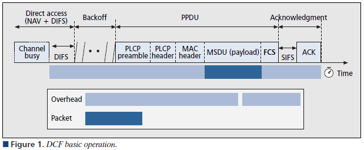
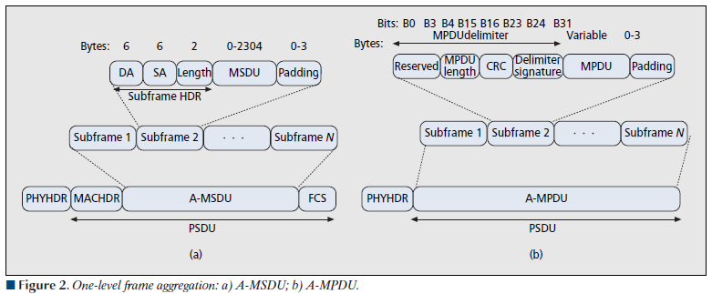

A-MPDU & A-MSDU
IEEE 802.11 MAC architecture is based on the logical coordination functions that determine who and when to access the wireless medium at any time.It supports fragmentation & encryption and act as an interface between Logical Link Control-LLC sublayer & PHY layer.
In legacy 802.11 (prior to 802.11n) standards, there are two type of access schemes
- DCF– Distributed Coordination Function (mandatory) based on CSMA/CA.
- PCF– Point Coordination Function (Optional) based on poll-response.
Due to lack of QoS in above implementation 802.11e proposed HCF (Hybrid Coordination Function) with contention-based channel access known as EDCA (Enhanced DCF Channel Access). In addition to the differentiation & prioritization, 802.11e offers TXOP (Tx Opportunity) an interval of time in which multiple data frames can be transferred from one station to another as way of improving MAC efficiency. Also it introduce a way of ACK multiple received data frames known as “block ACK”.
Basic operation of DCF is illustrated below.

After a frame, also known as MAC Service Data Unit (MSDU) arrives from LLC at the head of the transmission queue, the DCF operation istruct to MAC to wait DIFS (Distributed Interframe Space) before any other action. Once frame received by a station check for errors & no errors are found send ACK after SIFS (Short Interframe Space). If errors detected or communication disturbed, it will start re-transmission process.
In 802.11n standard, Frame Aggregation was the most important MAC enhancement proposed which maximize throughput and efficiency. There are two method available to perform frame aggregation.
- Aggregate MAC Service Data Unit (A-MSDU)
- Aggregate MAC Protocol Data Unit (A-MPDU)
The main distinction between MSDU & MPDU is the former corresponds to upper part of MAC sublayer where as MPDU.
A-MSDU: The concept of A-MSDU is to allow multiple MSDUs to be sent to the same receiver concatenated in a single MPDU. This supporting function for A-MSDU within 802.11n is mandatory at the receiver. Due to Destination Address (DA) and sender Address (SA) in the subframe header must match to same receiver address (RA) and the transmitter address (TA) in the MAC header, A-MSDU cannot be used for broadcast & multicast.
A-MPDU: The concept of A-MPDU aggregation is to join Multiple MPDU sub frames with a single leading PHY header. A key difference from A-MSDU aggregation is that A-MPDU functions after the MAC header encapsulation process. This method offer higher MAC throughput compare to A-MSDU.
Below shows these two frame aggregation methods used in 802.11n protocol standard. (Two level aggregation comprise a blend of A-MPDU & A-MSDU over two stage also defined,)
